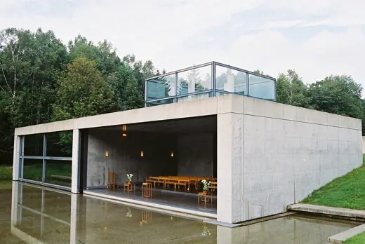

Buildings 455
Sort
 Cathedral of Brasília1970 · Brasília
Cathedral of Brasília1970 · Brasília Cathedral of Saint Mary of the Assumption1971 · San Francisco
Cathedral of Saint Mary of the Assumption1971 · San Francisco Sainte-Marie de La Tourette1960 · Éveux
Sainte-Marie de La Tourette1960 · Éveux Padre Pio Pilgrimage Church2004 · San Giovanni Rotondo
Padre Pio Pilgrimage Church2004 · San Giovanni Rotondo First Unitarian Church of Rochester1962 · Rochester
First Unitarian Church of Rochester1962 · Rochester Coventry Cathedral1962 · Coventry
Coventry Cathedral1962 · Coventry Selimiye Mosque1575 · Edirne
Selimiye Mosque1575 · Edirne Chapel of St. Ignatius1997 · Seattle
Chapel of St. Ignatius1997 · Seattle Santa Maria Church, Marco de Canaveses1996 · Marco de Canaveses
Santa Maria Church, Marco de Canaveses1996 · Marco de Canaveses Cardboard Cathedral2013 · Christchurch
Cardboard Cathedral2013 · Christchurch Liverpool Cathedral1978 · Liverpool
Liverpool Cathedral1978 · Liverpool Sagrada Familiabegun 1882 · Barcelona
Sagrada Familiabegun 1882 · Barcelona Crystal Cathedral1980 · Garden Grove
Crystal Cathedral1980 · Garden Grove Notre-Dame du Haut1955 · Ronchamp
Notre-Dame du Haut1955 · Ronchamp Rothko Chapel1971 · Houston
Rothko Chapel1971 · Houston MIT Chapel1955 · Cambridge
MIT Chapel1955 · Cambridge Thorncrown Chapel1980 · Eureka Springs
Thorncrown Chapel1980 · Eureka Springs New Synagogue Dresden2001 · Dresden
New Synagogue Dresden2001 · Dresden Kannikegården2015 · Ribe
Kannikegården2015 · Ribe Chapel of the Holy Cross1956 · Sedona
Chapel of the Holy Cross1956 · Sedona Kamppi Chapel2012 · Helsinki
Kamppi Chapel2012 · Helsinki Djinguereber Mosque1327 · Timbuktu
Djinguereber Mosque1327 · Timbuktu Unity Temple1908 · Oak Park
Unity Temple1908 · Oak Park Crypt of Colonia Guell1914 · Santa Coloma de Cervello
Crypt of Colonia Guell1914 · Santa Coloma de Cervello Hagia Sophia537 · Istanbul
Hagia Sophia537 · Istanbul Kaiser Wilhelm Memorial Church1963 · Berlin
Kaiser Wilhelm Memorial Church1963 · Berlin Luce Memorial Chapel1963 · Taichung
Luce Memorial Chapel1963 · Taichung
Church on the Water1988 · Tomamu Gulshan Society Mosque2017 · Dhaka
Gulshan Society Mosque2017 · Dhaka Grundtvig's Church1940 · Copenhagen
Grundtvig's Church1940 · Copenhagen Neviges Pilgrimage Church1968 · Velbert
Neviges Pilgrimage Church1968 · Velbert Süleymaniye Mosque1557 · Istanbul
Süleymaniye Mosque1557 · Istanbul Baha'i Temple of South America2016 · Santiago
Baha'i Temple of South America2016 · Santiago Angkor Watc. 1150 · Siem Reap
Angkor Watc. 1150 · Siem Reap St. Mary's Cathedral1964 · Tokyo
St. Mary's Cathedral1964 · Tokyo Bagsværd Church1976 · Copenhagen
Bagsværd Church1976 · Copenhagen Lotus Temple1986 · New Delhi
Lotus Temple1986 · New Delhi North Christian Church1964 · Columbus
North Christian Church1964 · Columbus Church of the Light1989 · Ibaraki
Church of the Light1989 · Ibaraki Cathedral of Our Lady of the Angels2002 · Los Angeles
Cathedral of Our Lady of the Angels2002 · Los Angeles St. John's Abbey Church1961 · Collegeville
St. John's Abbey Church1961 · Collegeville Kirche am Steinhof1907 · Vienna
Kirche am Steinhof1907 · Vienna Badshahi Mosque1673 · Lahore
Badshahi Mosque1673 · Lahore Sheikh Lotfollah Mosque1619 · Isfahan
Sheikh Lotfollah Mosque1619 · Isfahan Lakeuden Risti Church1960 · Seinajoki
Lakeuden Risti Church1960 · Seinajoki Galway Cathedral1965 · Galway
Galway Cathedral1965 · Galway